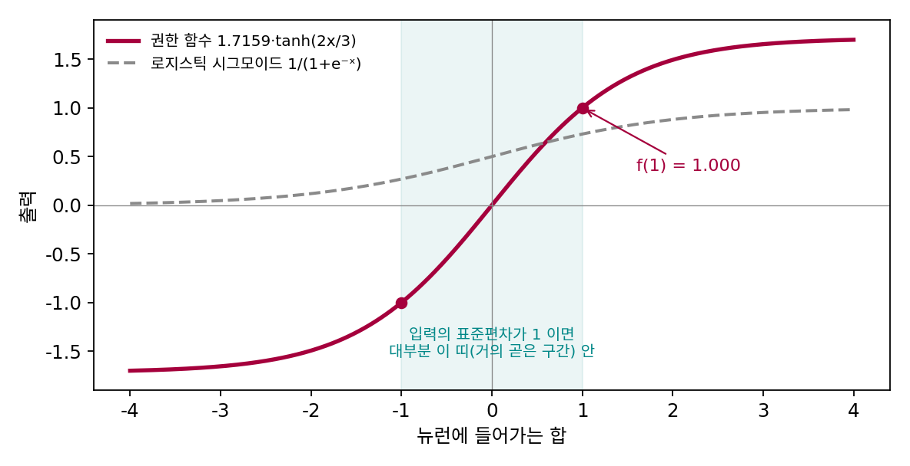
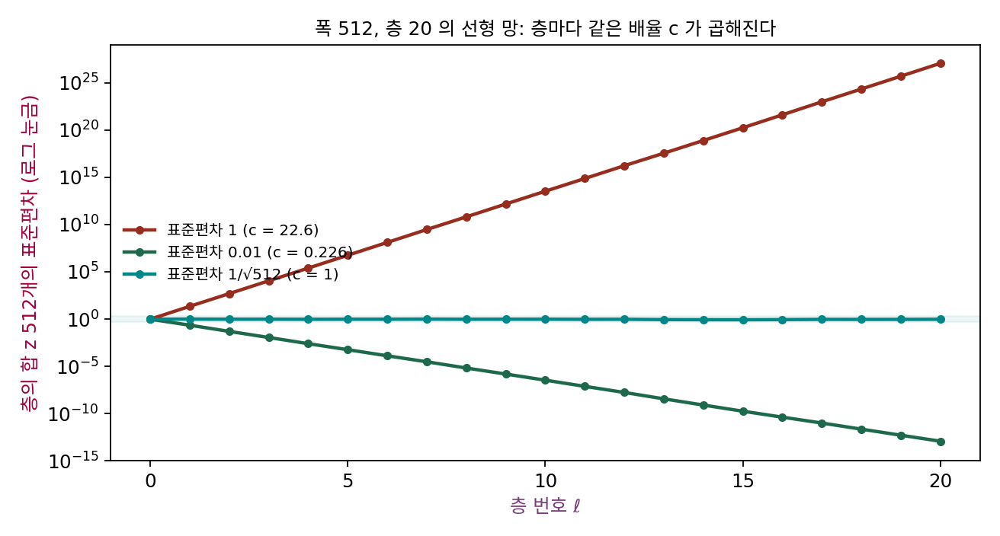
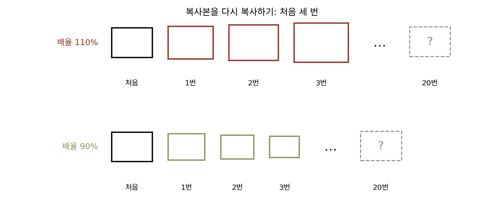
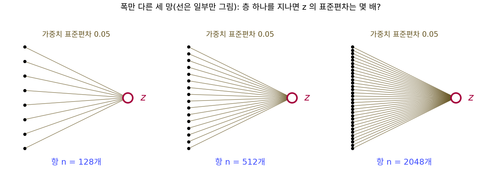
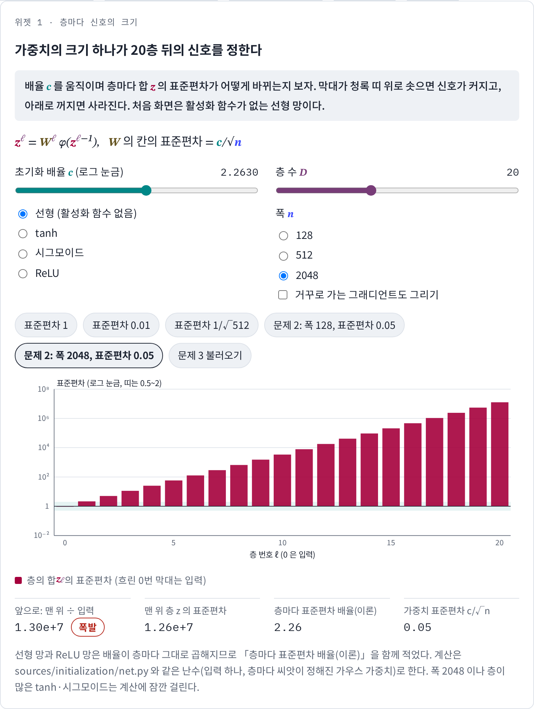
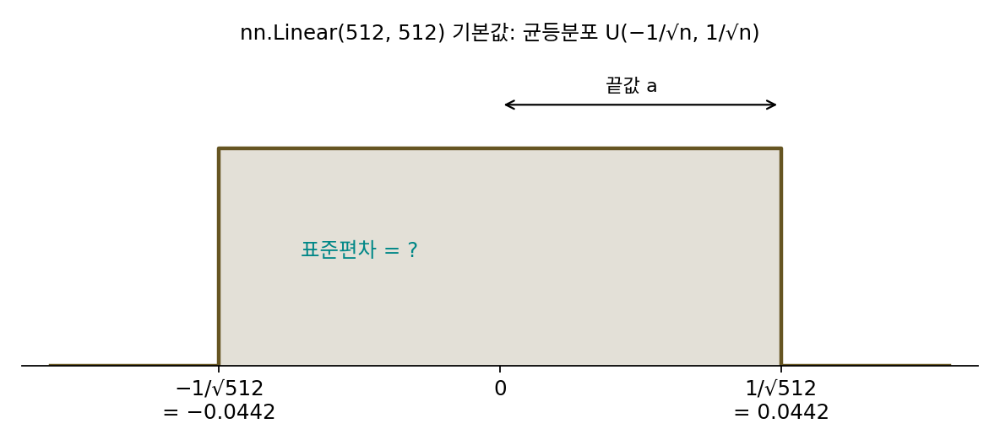
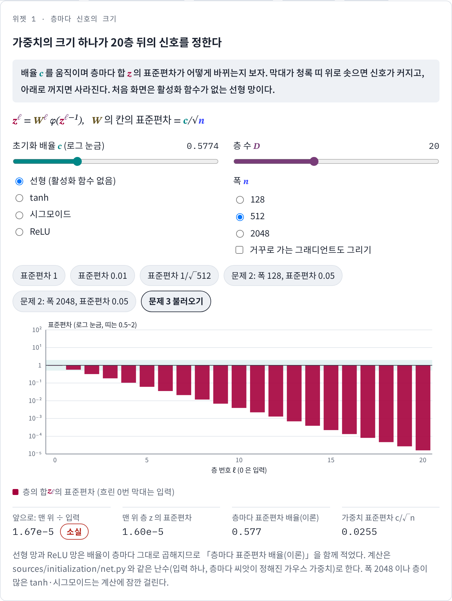

가중치 초기화: 신호가 커지지도 사라지지도 않게
이 장의 물음
파이토치로 층이 스무 개인 신경망을 처음부터 직접 짜 본다고 하자. 층마다 512 × 512 가중치 행렬을 torch.randn(512, 512)로 만들어 입력을 넣었더니, 학습을 시작하기도 전에 출력이 inf(무한대)로 넘친다. 값이 너무 크다 싶어 가중치에 0.01을 곱해 다시 넣으면 이번에는 출력이 모두 0에 가까운 값이 되고, 손실은 몇천 스텝이 지나도 꿈쩍하지 않는다. 같은 망인데 가중치의 크기만 바꿨을 뿐이다. 그런데 층이 서너 개인 망에서는 두 경우 모두 그럭저럭 학습이 되니, 층이 많아지면 무엇이 달라지는 걸까?
이 일은 한 사람의 실수담이 아니다. 신경망 연구자들은 오랫동안 층을 깊게 쌓은 망을 무작위 가중치에서 출발해 경사하강으로 학습시키는 데 애를 먹었다. 2010년의 한 논문은 첫 문장을 「2006년 이전에는 깊은 다층 신경망을 학습시키는 데 성공하지 못했던 것으로 보인다」로 시작한다. 역전파가 있었고 컴퓨터도 있었는데, 왜 깊은 망은 배우지 못했을까?
이 장은 다음 물음에 차례로 답한다.
- 무작위로 고른 가중치를 지날 때 신호의 크기는 층마다 어떻게 바뀔까? 가중치를 어떤 크기로 골라야 스무 층 뒤에도 신호가 그대로일까?
- 앞으로 가는 신호의 크기를 지켰는데도 학습이 안 될 수 있을까? 거꾸로 전해지는 그래디언트는 무엇이 정할까?
- 활성화 함수를 바꾸면 알맞은 가중치의 크기도 바뀔까?
- 신호의 평균 크기만 맞추면 충분할까, 아니면 더 지켜야 할 것이 있을까?
- 층이 백 개, 천 개로 늘어나도 통하는 방법이 있을까?
분산 보존: 층을 지나도 신호의 크기를 지키기
역전파를 배울 때 신경망의 그래디언트는 층마다의 자코비안(벡터 함수의 편미분을 모은 행렬)을 차례로 곱해서 얻는다는 것을 보았다. 앞으로 가는 계산도 마찬가지로 곱셈의 사슬이다. 입력 벡터에 첫 층의 가중치 행렬을 곱하고, 활성화 함수를 거치고, 다시 다음 층의 행렬을 곱한다. 곱셈을 스무 번 되풀이하면, 한 번에 조금씩 커지거나 작아지는 것도 스무 번 쌓인다. 학습을 시작하기 전의 가중치는 무작위로 뽑으니, 무작위 행렬 하나를 지날 때 신호는 몇 배가 되고, 그 배율을 1로 맞추려면 가중치를 어떤 크기로 뽑아야 할까?
역사: 르쿤의 학습 요령 모음

1998년 얀 르쿤(Yann LeCun), 레옹 보투(Léon Bottou), 제네비브 오르(Genevieve Orr), 클라우스로베르트 뮐러(Klaus-Robert Müller)는 「효율적인 역전파(Efficient BackProp)」라는 글을 썼다. 이 글은 『신경망: 학습의 요령(Neural Networks: Tricks of the Trade)』이라는 책에 실렸다. 이 글의 서문은 역전파를 쓰는 사람들이 흔히 겪는 문제들이 「진지한 기술 논문에는 좀처럼 드러나지 않는 요령」으로 피해진다고 적고, 그 요령들을 모아 왜 듣는지를 설명한다. 입력의 평균을 빼고 분산을 맞추라는 전처리, 활성화 함수로 1.7159·tanh(2x/3)을 쓰라는 권고와 함께 가중치를 어떻게 뽑을지도 이 글에 있다.
그들의 걱정은 활성화 함수였다. 가중치가 모두 크면 시그모이드(S자 모양의 활성화 함수)가 납작한 양 끝에 머물러 그래디언트가 작아지고, 가중치가 모두 작으면 그래디언트도 작아진다. 그래서 뉴런에 들어가는 합이 활성화 함수의 거의 곧은 구간에 머물게 하자는 것이다. 입력이 표준편차 1로 정규화되어 있다고 할 때 뉴런의 합의 표준편차도 1이 되려면, 가중치를 평균 0, 표준편차 m^(−1/2)인 분포에서 뽑으면 된다고 적었다. m은 그 뉴런으로 들어오는 연결의 수(팬인, fan-in)다. 이 글은 뉴런 하나, 층 하나의 크기를 맞추는 데서 멈췄으니, 이 처방을 스무 층에 그대로 쌓으면 어떻게 되는지 직접 보자.

가중치를 m^(−1/2)로 뽑으라는 거면 지금은 nn.init 한 줄이잖아요. 이걸 요령이라고 책으로 묶을 정도였어요?

그 한 줄은 누가 써 줬을까요? 파이토치가 나온 건 2016년이에요. 1998년에는 연구실마다 신경망 계산 코드를 직접 짰고, 가중치를 뽑는 줄도 저마다 정했어요.

그럼 잘 되는 크기를 찾은 사람이 있어도 논문에 안 쓰면 다른 연구실은 모르겠네요. 서문이 「진지한 기술 논문에는 좀처럼 드러나지 않는 요령」이라고 한 게 그 얘기고요.

코드를 올려 두고 서로 가져다 쓰는 깃허브도 2008년에야 생겼어요. 그러니 요령을 모아 왜 듣는지까지 적어 둔 글이 귀했던 거예요.

그런데 왜 뉴런 하나에서 멈췄어요? 층마다 표준편차를 찍어 보면 되잖아요.
한 층에서 배율이 1이면 스무 층을 지나도 1이니까, 한 층을 맞추면 된다고 보는 게 자연스러웠어요.

그런데 한 층의 배율이 1.01처럼 1에서 아주 조금 벗어나 있어도, 그 배율이 스무 번 곱해지잖아요. 그럼 한 층의 배율이 정확히 1이 되려면 가중치를 정확히 얼마로 뽑아야 해요?
폭 512, 층 20 의 선형 망
가장 단순한 경우부터 보자. 활성화 함수 없이 행렬 곱만 스무 번 하는 망이다. 층마다 칸(뉴런)이 n = 512개 있고, 층 ℓ의 합 zℓ은 앞 층의 값에 가중치 행렬 Wℓ을 곱한 것이다. 입력 z0은 표준정규분포에서 뽑은 512개 값이고, 실제로 뽑힌 값의 표준편차는 0.956이다. 가중치의 512 × 512칸은 모두 평균 0인 정규분포에서 서로 독립으로 뽑는다. 이 장의 망과 숫자는 모두 같은 난수 씨앗으로 만들었다(sources/initialization/net.py, 위젯도 같은 난수를 쓴다). 가중치의 표준편차만 셋으로 바꿔 층마다 zℓ 512개의 표준편차를 찍으면 다음과 같다.
| 가중치의 표준편차 | 층 1 | 층 2 | 층 5 | 층 10 | 층 20 |
|---|---|---|---|---|---|
1 (torch.randn 그대로) |
22.2 | 491 | 5.66 × 10⁶ | 3.37 × 10¹³ | 1.17 × 10²⁷ |
| 0.01 | 0.222 | 0.0491 | 0.000566 | 3.37 × 10⁻⁷ | 1.17 × 10⁻¹³ |
| 1/√512 = 0.0442 | 0.980 | 0.960 | 0.954 | 0.958 | 0.942 |
표준편차 1로 뽑으면 한 층을 지날 때마다 신호가 스물두 배쯤 커져서 스무 층 뒤에는 10²⁷이 되는데, 이 장의 물음에서 본 inf가 이렇게 나온다. 0.01로 뽑으면 층마다 0.22배가 되어 스무 층 뒤에는 10⁻¹³만 남는다. 그런데 표준편차를 1/√512로 뽑은 마지막 줄에서는 층마다의 배율이 0.93과 1.06 사이를 오가고, 스무 층 뒤에도 0.942로 입력과 거의 같다.
왜 하필 1/√512일까? 층 ℓ의 칸 하나는 zᵢ = Wᵢ₁z₁ + ⋯ + Wᵢ₅₁₂z₅₁₂처럼 512개 항의 합이다. 항들은 서로 독립인 가중치를 곱했으므로, 합의 분산은 항마다의 분산을 512번 더한 것이다. 항 하나의 분산은 (가중치의 분산) × (들어온 값의 분산)이므로, 가중치의 분산을 c²/n으로 잡으면 다음이 된다.
가중치의 표준편차는 c/√n이고, 층 하나를 지날 때 신호의 표준편차는 c배가 된다. 스무 층이면 c²⁰배다. 표준편차 1은 c = √512 = 22.6이라 22.6²⁰ = 1.24 × 10²⁷, 표준편차 0.01은 c = 0.226이라 0.226²⁰ = 1.24 × 10⁻¹³로, 표에서 잰 값(입력 대비 1.22 × 10²⁷과 1.22 × 10⁻¹³)과 맞는다. c = 1, 곧 가중치의 표준편차를 1/√n으로 잡으면 층마다의 배율이 1이 된다. 이처럼 층을 지나도 신호의 분산이 그대로 남도록 가중치의 크기를 고르는 것을 분산 보존 (층을 지나도 신호의 분산을 그대로 두기 / variance preservation)이라 한다. 르쿤의 m^(−1/2)가 바로 c = 1이고, 그래서 이 크기를 흔히 「르쿤 초기화」라 부른다.

ML에서: torch.randn 대신 nn.init
파이토치의 torch.randn(512, 512)는 표준편차 1, 곧 c = 22.6인 가중치다. 층 하나짜리 실험에서는 출력이 스물두 배 커질 뿐이라 눈치채기 어렵지만, 층을 쌓으면 위 표의 첫 줄이 된다. 그래서 파이토치에는 가중치를 정해진 크기로 다시 뽑는 함수들이 torch.nn.init에 모여 있다. 이 장에서 볼 이름들, 곧 르쿤, 글로로, 허카이밍의 이름이 붙은 초기화가 모두 이 c를 어떻게 고르느냐의 차이다. nn.Linear가 아무 말 없이 쓰는 기본값의 c는 얼마인지는 아래 문제 3에서 직접 계산한다.
문제 1. 복사기 배율
복사기로 사진을 복사하고, 그 복사본을 다시 복사하기를 20번 되풀이하는데, 복사기의 배율 설정이 조금 어긋나 있다. (가) 배율이 101%, 110%, 90%이면 20번 뒤 사진의 크기는 처음의 몇 배인가? (나) 20번 뒤 크기를 처음의 0.5배와 2배 사이에 두려면 배율이 어느 범위에 있어야 하는가? (다) 100번 복사한다면?

101%면 1%씩 커지니까 20번이면 20%, 1.2배쯤이요. 110%면 3배, 90%면 0.8배쯤 되겠죠.
101%에서 1.2배는 거의 맞았는데, 110%를 직접 계산해 볼래요?

1.1을 스무 번 곱하면… 6.73배요. 3배가 아니네요. 90%는 0.12배로 거의 안 보이게 작아지고요. 101%도 계산하면 1.22배예요. 매번 커진 걸 또 키우니까 더하는 게 아니라 곱하는 거였어요.
(나)는 배율 p의 스무제곱이 0.5와 2 사이여야 하니까, p는 0.5^(1/20) = 0.966과 2^(1/20) = 1.035 사이야. 3.5% 안쪽이면 돼.
100번이면요?

0.9931과 1.0070 사이요. 0.7%도 안 어긋나야 해요. 횟수가 다섯 배가 되니까 허용 오차가 다섯 배쯤 좁아졌어요. 층이 깊을수록 한 층의 배율을 1에 더 바짝 붙여야 한다는 거네요.

조별 과제 보고서를 다섯 명이 차례로 「조금만 줄여서」 넘기면 마지막엔 반쪽짜리가 되는 거랑 같네요. 한 사람한테는 별것 아닌 10%가 다섯 번이면 0.59배예요.
문제 2. 폭을 바꾸면
가중치의 표준편차를 폭과 상관없이 0.05로 고정한 선형 망(층 20)이 있다. (가) 폭이 128, 512, 2048일 때 층 하나를 지나며 신호의 표준편차는 몇 배가 되는가? 20층 뒤에는? (나) 폭 512에서 표준편차를 「항이 512개니까 512로 나눈다」는 생각으로 1/512로 잡으면 어떻게 되는가? (풀어 본 뒤 위젯 1의 「문제 2」 단추로 확인해 보자.)

(나)부터요. 512개를 더하니까 평균처럼 512로 나누면 맞을 것 같아요.
512로 나누면 한 층에서 표준편차가 몇 배가 되는지 식에 넣어 볼까요? 가중치의 표준편차가 c/√n이었어요.

1/512 = c/√512니까 c = 1/√512 = 0.0442예요. 층 하나에 0.0442배, 돌려 보니 첫 층에서 벌써 0.0433이고 스무 층 뒤에는 7.6 × 10⁻²⁸이에요. 완전히 사라졌어요.
잠깐, 512로 나누는 건 512개가 다 같은 쪽으로 움직일 때 얘기 아니야? 무작위 가중치를 곱한 항이면 서로 독립이잖아.
독립인 항 512개를 더하면 표준편차는 몇 배가 되죠?
분산이 512배니까 표준편차는 √512배요. 그러니까 나누는 것도 √512여야 해요.
그럼 (가)는요? 0.05는 1/√512 = 0.0442와 꽤 가까운데요.
층 하나의 배율은 √n × 0.05라서 폭 128은 0.566, 512는 1.131, 2048은 2.263이에요. 셋 다 1에서 아주 멀지는 않은데요.
스무 번 곱하면요?

1.1 × 10⁻⁵, 11.8, 1.2 × 10⁷이요. 이렇게까지 벌어져요?
돌려 봐도 1.03 × 10⁻⁵, 11.1, 1.26 × 10⁷이야.
같은 0.05인데 폭만 바꿨더니 사라지는 망, 열 배쯤 커지는 망, 터지는 망이 다 나와요.

그래서 초기화는 숫자 하나가 아니라 「폭에 맞춘 규칙」이어야 해요. 하나 더 해 볼까요. 문제에 「서로 독립으로 뽑는다」는 조건이 있었죠. 그 조건을 빼고, 가중치 512 × 512칸을 모두 같은 값 1/√512로 두면 어떻게 될까요?
돌려 보니 첫 층의 칸 512개가 전부 1.655로 똑같아요. 둘째 층은 전부 37.44, 셋째 층은 847.2… 층마다 22.6배씩 커져요.
22.6이면 √512네요. 항이 모두 같은 쪽으로 움직이니까 이번엔 진짜로 512배가 되고, √512로 나눈 걸 빼면 층마다 √512배가 남는 거예요.
크기 말고 이상한 건 없나요? 첫 층의 칸 512개를 다시 보세요.
전부 1.655로 똑같아요… 그럼 칸이 512개 있어도 하나 있는 거나 마찬가지네요.
학습하다 보면 달라지지 않아?

그래디언트도 칸마다 똑같을 테니 계속 똑같이 움직일 거야. 무작위로 뽑는 데는 크기를 맞추는 것 말고 칸들을 서로 다르게 만드는 구실도 있었네. 선형대수 시간에 열이 모두 같은 행렬은 계수가 1이라고 배운 게 이거야.

문제 3. nn.Linear 의 기본값
파이토치의
nn.Linear(512, 512)는 따로 정하지 않으면 가중치를 균등분포 U(−1/√n, 1/√n)에서 뽑는다(n은 입력의 수). (가) 이 분포의 표준편차와 배율 c는? (나) 이 기본값으로 선형 층 20개를 쌓으면 20층 뒤 신호는 처음의 몇 배인가? (풀어 본 뒤 위젯 1의 「문제 3 불러오기」로 확인해 보자.)

범위가 ±1/√n이니까 표준편차도 1/√n이고, 그럼 c = 1이요. 르쿤 초기화랑 같네요.
균등분포 U(−a, a)의 표준편차가 정말 a일까요? 1/√512 = 0.0442로 놓고 직접 뽑아 봐요.
nn.Linear(512, 512)를 만들어 가중치의 표준편차를 재니까 0.0255예요. 0.0442가 아니에요. 왜 이렇게 작지?
U(0, 1)의 분산을 통계 수업에서 구해 본 적 있죠?

1/12요… 아, 그럼 폭이 2a면 표준편차가 2a/√12, 곧 a/√3이에요. 끝값 a는 표준편차가 아니었네요. 그러면 c = 1/√3 = 0.577이요.
그럼 스무 층이면 0.577²⁰ = 1.7 × 10⁻⁵배야. 같은 크기의 정규분포로 돌려 봐도 1.6 × 10⁻⁵이 나와. 기본값으로 선형 층을 깊게 쌓으면 신호가 거의 사라져.
기본값은 층 몇 개짜리 망에서 무난하게 쓰라는 값이지, 깊은 망의 분산을 지키도록 맞춘 값은 아니에요. 2010년 논문에서 글로로와 벤지오가 「흔히 쓰는 경험칙」이라고 부른 것도 바로 이 U(−1/√n, 1/√n)이었어요. 그 논문은 이 경험칙이 층마다 분산을 1/3로 줄인다는 데서 시작해요.
범위의 끝 a와 표준편차를 헷갈리면 배율이 √3배 어긋나는 거네요. 스무 층이면 √3²⁰ = 59,049배고요.
남이 쓴 깊은 망 코드에 nn.init.kaiming_normal_ 같은 줄이 꼭 들어가 있던 게 이래서였구나. 저는 지우고 돌려도 되는 줄 알았어요. 리포트 분량 제한이 「A4 열 장」인데 글자 크기를 안 정해 주면 다들 다르게 맞추는 거랑 같아요.
